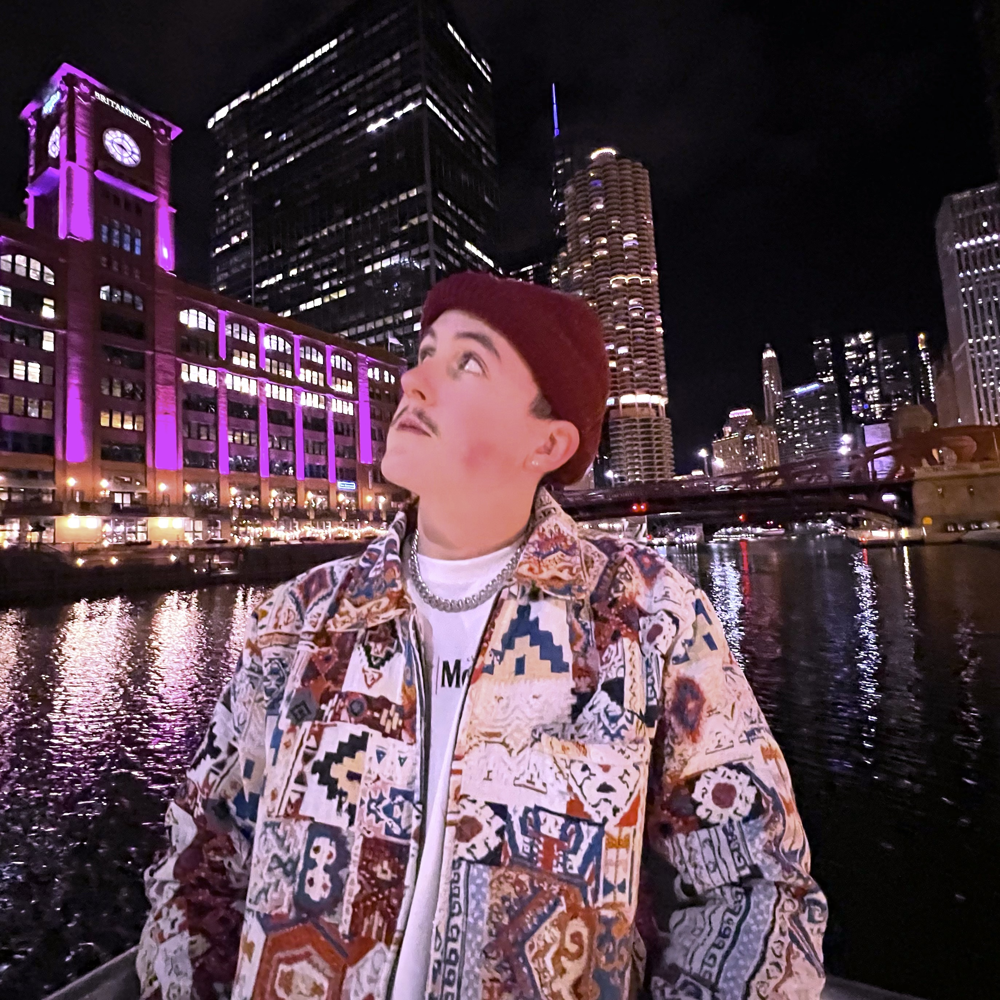
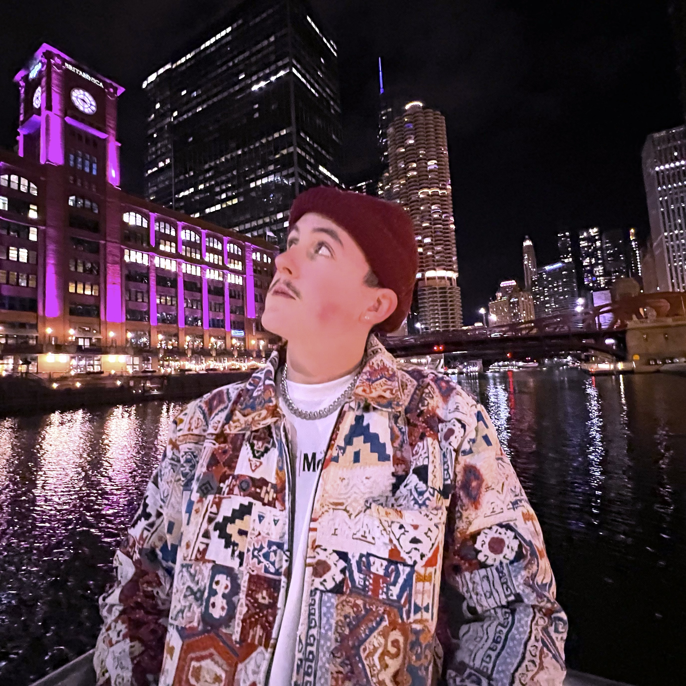

Xavier Pous-Ojeda, also known as Chemical X, is the creative director and founder of Pous-Ojeda Productions. Born & raised in Iowa with a deep passion for music, culture, and community, Xavier has always been in love with creating. Growing up, he always knew he wanted to create something & make an impact, he wanted to be everything from a guitarist to a politician before finally finding his passion as a producer
Inspired by multi-faceted artists like A$AP Rocky, Kanye West, and Mac Miller, Xavier blends innovative ideas and psychedelic style to deliver more than just sound; he delivers a feeling. From beat making and engineering to brand building and grassroots collaboration, he has placed authenticity & community at the heart of Pous-Ojeda Productions
Pous-Ojeda Productions is a reflection of his values: integrity, expression, and empowerment. Through each track, project, and design, our mission is to uplift and inspire the next generation of independent creatives